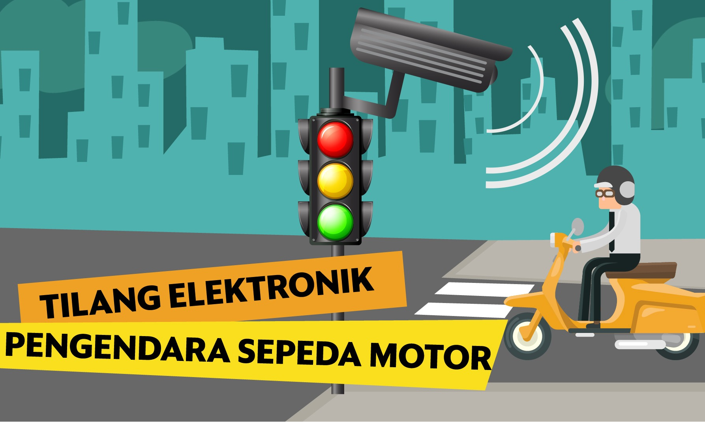

Berita Terkini
Daftar Kategori
- Startup

PetaNetra: Aplikasi Inovatif Buatan Anak Bangsa untuk Penyandang Tunanetra
PetaNetra merupakan aplikasi yang dikembangkan oleh tim berjumlah 7 orang yang bertemu di program Apple Developer Academy pada tahun 2021...

eFishery: pemberi pakan ikan otomatis buatan Indonesia
Gibran Huzaifah mendirikan eFishery dengan tiga tujuan utama. Pertama, untuk mendukung kebutuhan pangan global melalui pengembangan akuakultur...
Sayur Box: Belanja buah dan sayuran jadi lebih mudah
Sayurbox adalah platform online yang memudahkan kamu berbelanja buah dan sayuran segar langsung dari petani lokal...
- Transportasi

Bus Listrik Transjakarta: Mobilitas bebas emisi
Pemerintah Provinsi DKI Jakarta bekerja sama dengan PT Transjakarta secara resmi meluncurkan 30 bus listrik bebas emisi, menandai kehadiran bus listrik pertama di Jakarta...

Mengenal Tilang Elektronik sebagai Solusi di Jalan
Sistem penindakan tilang elektronik, yang dikenal sebagai Electronic Traffic Law Enforcement, mulai diberlakukan sejak Sabtu, 1 Februari 2020...